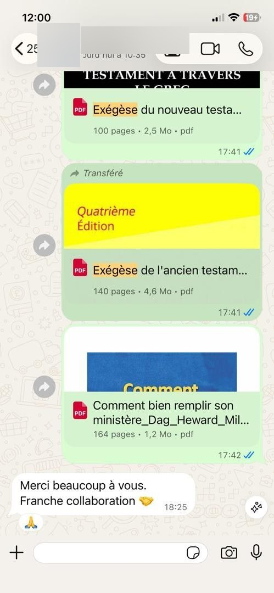

Ancien Testament — Exégèse
Une ressource consacrée à l'étude et à l'interprétation des textes de l'Ancien Testament.
Ressources numériques
Les ressources essentielles pour éviter les erreurs d'interprétation et enseigner la Parole avec assurance.
Approfondissez votre compréhension des textes bibliques grâce à une sélection de ressources consacrées à l'exégèse, au contexte biblique et aux pièges d'interprétation.
Accès aux ressources via notre plateforme de vente sécurisée.
Lire la Bible est essentiel. Mais comprendre correctement un passage demande parfois d'aller plus loin que la simple lecture. Le contexte, la langue, la culture, la structure du texte et les intentions de l'auteur peuvent influencer profondément son interprétation.
Sortir un verset de son contexte
Confondre opinion personnelle et sens du texte
Négliger le contexte historique
Ignorer certains éléments linguistiques
Répéter une interprétation sans vérifier le passage
Pour enseigner correctement, il est essentiel de disposer de bons outils d'étude.
La collection
Cette collection rassemble plusieurs ressources destinées à vous accompagner dans une étude plus approfondie des textes bibliques et dans l'identification des erreurs d'interprétation.
Une ressource consacrée à l'étude et à l'interprétation des textes de l'Ancien Testament.
Approfondissez l'étude du texte du Nouveau Testament en découvrant certains aspects du vocabulaire et de la grammaire grecque.
Découvrez les pièges et erreurs fréquents qui peuvent conduire à une mauvaise interprétation des textes bibliques.
Ce que vous y trouverez
Public concerné
Pour approfondir la préparation des prédications et enseignements.
Pour développer une approche plus rigoureuse de l'interprétation biblique.
Pour disposer de ressources supplémentaires lors de l'étude des textes.
Pour compléter leur formation et leurs recherches personnelles.
Pour approfondir leurs connaissances bibliques et doctrinales.
Pour aller plus loin dans leur compréhension personnelle des Écritures.
Derrière chaque passage biblique se trouvent un contexte, une structure et un message qu'il est important de considérer. Les bons outils peuvent vous aider à aller plus loin dans votre étude.
Retours reçus
Découvrez quelques retours reçus de personnes ayant découvert nos ressources.

L'offre
Une collection de ressources pour approfondir votre compréhension du texte biblique et éviter les erreurs d'interprétation.
Questions fréquentes
Elle s'adresse notamment aux pasteurs, prédicateurs, enseignants bibliques, étudiants en théologie, responsables d'église et à toute personne souhaitant approfondir son étude de la Bible.
Non. Toute personne intéressée par l'étude biblique et l'exégèse peut y trouver des ressources utiles.
Non. La collection peut également servir de support pour découvrir et approfondir progressivement certains aspects liés au texte grec du Nouveau Testament.
Cliquez sur l'un des boutons d'accès à la collection. Vous serez automatiquement redirigé vers Chariow pour effectuer votre achat.
Le paiement s'effectue directement sur la plateforme Chariow.
Les modalités d'accès aux ressources numériques sont indiquées sur la plateforme de vente après l'achat.
Maîtrisez l'Exégèse Biblique
Donnez-vous les ressources nécessaires pour étudier les textes bibliques avec davantage de méthode et de profondeur.
Accéder à la collectionVous serez redirigé vers Chariow pour finaliser votre achat.